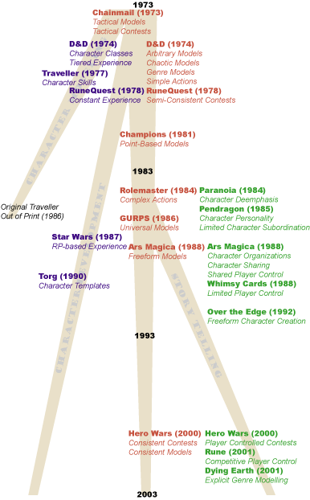

|
A Brief History of Roleplaying, Part Threeby Shannon Appelcline Over the last few columns I've been talking about roleplaying, and more specifically the history of game design in roleplaying. If you haven't read the first two columns in this series, I highly suggest it:
It's been my general analysis in these last columns that the evolution of roleplaying has branched into three main categories: character modelling, character development, and story telling. In previous installments I've covered those first two branches, so this week I'd like to finish up with the story telling developments of the last two decades. Branch Three: Story Telling GamesI should probably start off by saying that story telling games aren't truly discrete from the dominant roleplaying branch of character development. In almost every story telling game, you'll still find players playing characters, and enjoying their gradual improvement through play. The evolution of character development that I discussed in TT&T #132 has been mirrored, and even aided, by the story telling branch of design. What the story telling branch does do, however, is change the emphasis of gameplay to some extent. It makes the idea of telling great stories at least a factor, even though it's not always the most important one. To various extents in various games you'll find people sometimes hurting their own characters if it tells a great story. Perhaps someday there will be a totally discrete branch of story telling games, but for now it's just a somewhat different way to look at the dominant roleplaying paradigm. The story telling branch involves a lot of changes in game design, but prominent ones include: deemphasis on characters, both increased and decreased control for players, and more freeform systems of play. Character Deemphasis (1984). In the earliest roleplaying days, the player was the character, and the character's death was a loss and a cause for mourning. The first game to dramatically challenge this idea was Paranoia (1984). Suddenly character death was common. Sure, each character had 6 chances, but in an extended campaign you could count on eventually ending up with a new character. (Though I've heard many cite this as a reason that Paranoia campaigns failed.) Pendragon (1985) would take this same idea in an interesting direciton. In this Arthurian RPG campaigns could last for decades in-game, with your original characters slowly aging into retirement. Pendragon offered a nice compromise by allowing you to play the descendents of your original character, retained some skills, but in other ways starting afresh. Character Personality, Limited Player Subordination (1985). Pendragon (1985) is also notable for being the first game to truly introduce the idea of character personality into the game. Earlier games had frequently included spaces on character sheets labelled "Demeanor", but little more. Pendragon laid out a whole set of personality traits, from Cowardly to Lustful, and ranked each character in those traits. They had multiple game effects, and could even force decisions on a player in extreme cases for characters with high personality traits. Few other games have adapted the idea of character personality to the extent of Pendragon. Some use individual advantages and disadvantages as a substitute, while more recent games such as Hero Wars (2000) treat personality traits exactly the same as other skills--but even these are rare. Character Organizations (1988). With its secret societies, Paranoia (1985) first pioneered the idea of character organizations to a limited extent, but they didn't become an integral part of a game until Ars Magica (1988) and didn't really enter the general mindset until Vampire: The Masquerade (1991). Now they proliferate, largely replacing the concept of Character Templates which made a brief appearance around 1990. The importance of character organizations is that they really gave players an opportunity to help plot gaming stories in a way they hadn't before. By falling back on the background of their organization players could help form specific tales which starred their own characters, not the entire gaming group--though the importance of these mini-stories ultimately depending on how hard the players were willing to work and how much the gamemasters were willing to let go. Shared Player Control, Character Sharing (1988). Ars Magica (1988) also pushed another idea generally unknown in the roleplaying community: troupe roleplaying. This involved two major factors: character and gamemaster variation. First, each player had many characters that he could play, some his own and some communal, and thus the tie to individual character development was somewhat reduced. Second, gamemastering duties were shared by the entire group rather than held by one individual, allowing for many players' stories to be intertwining with each other in a powerful manner previously impossible. Troupe roleplaying has never generally caught on, I think mainly because most people aren't willing to share in the gamemastering duties, but when it works, it works well. Limited Players Control (1988). Lion Rampant, the original publishers of Ars Magica, also brought forth one more innovation in the late 1980s: Whimsy Cards (1988). These were cards given out to the players which stated general plot twists, and thus allowed players to introduce complications to the story. The concept was briefly revived by White Wolf as Story Paths (1990) but has largely vanished since. Freeform Character Creation (1992). Jonathan Tweet, who was one of the co-innovators of Lion Rampant in the late 1980s, next emerged as the developer of Over the Edge (1992). It introduced a very freeform character creation system wherein players described their characters, and only then tried to assign numbers to those descriptions, with no concerns about balance. Other freeform character creation include Sketch! (2000), wherein players vote on a player's abilities based on a drawing, and Hero Wars (2000), wherein players have a 100 words to describe their characters, with some limitations. Like many of the other innovations of story telling games, this one gave more control to the players. Player Controlled Contests (2000). Hero Wars (2000), designed by Robin Laws, also introduced additional character control into the modeling of contests. WIthin contests, players were able to determine how many action points they were "betting", thus giving them the opportunity to somewhat control the effort they were putting in a contest and the danger they were risking. The recently released Marvel Universe Roleplaying Game (2003) offered another look at this system, giving players energy pools from which they could choose to expend "stones", based on how much effort they were putting forth to succeed. Competitive Player Control (2001). Rune (2001), one of the most recent designs by Robin Laws, offers a new spin on the idea of sharing control among players. In Rune play is competitive, and players use strict point systems to design encounters for each other, with a choosen Plotter helping to hold everything together. Explicit Genre Modeling (2001). There are a number of games that have done a great job of modeling a genre, among them James Bond 007 (1983) and Star Wars (1987). However one of the first games to really make the modeling of a genre explicit, with classical carrot-and-stick mentality, was another Robin Laws design, The Dying Earth Roleplaying Game (2001). This has a unique character experience system which depends on players repeating quotes appropriate to the genre. (Dying Earth also extends many of the other ideas in the story telling branch of RPGs, including limited player subordination through the use of vices.) The story telling branch of RPGs is the one that is still changing the most today, with many new releases constantly coming from the small, indy-rpg community, including notables such as Sorcerer (2001) and My Life with Master (2003). The Forge includes the latest on much of this development. ConclusionSo, what does this all mean to you as an online game developer? Consider it a menu of options. Here, laid out in front of you in these last three articles are the general directions of roleplaying development over the last 30 years. Some have worked, some have not, some have become the definitive way to do things, while others are largely unexplored. Figure out what general shape you want your own games to take, and then think about all the various possibilities laid out in this history. I'll see you in 14. [ <— #133: Anatomy of a Game: Big Brother | #135: Anatomy of a Game: Survivor Twists —> ] Miniseries ...
|